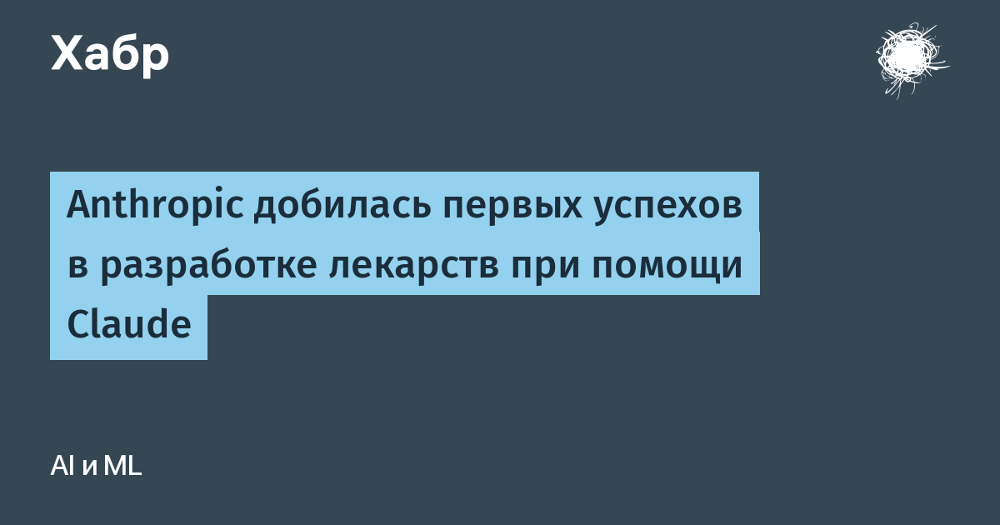

Anthropic опубликовала отчёт о первых результатах программы ускорения разработки лекарств с помощью Claude. Компания заключила глубокие исследовательские партнёрства с шестью организациями: BigHat Biosciences, Bristol Myers Squibb, Divergence Labs, Enveda, Generate Biomedicines и The Column Group. Цифры из официального отчёта впечатляют: в Divergence Labs Claude за месяц сгенерировал около 35 000 вариантов антител против пищевой аллергии. Учёные отобрали три кандидата, связывающихся с иммуноглобулином E, и ещё 20 вариантов, способных отделять эту молекулу от иммунных клеток — три из них в тестах оказались лучше стандартного препарата.
В Generate Biomedicines исследователи с помощью Claude Code переписали генетические инструкции CAR-T-клеточной терапии, которую применяют при онкологических заболеваниях крови. Вариант от Claude получился на 70% короче стандартной версии и показал лучшие результаты в лабораторных испытаниях; теперь метод адаптируют против солидных опухолей. В BigHat Biosciences самые удачные предложенные модели варианты антител показали лучшую связь с мишенью и повышенную стабильность.
Кроме молекулярного дизайна Claude занялся рутинной, но дорогой работой. Enveda отдала ему анализ документации фармацевтического производства: ИИ нашёл все 11 ошибок, ранее обнаруженных специалистами-людьми, плюс семь новых, а время проверки сократилось на 89%. Bristol Myers Squibb планирует с помощью Claude анализировать планы разработки перспективных препаратов и оценивать вероятность успеха испытаний.
Самое смелое объявление — покупка Mithril Medicine, компании, разрабатывающей лекарство от двух редких форм мышечной дистрофии. Её основатель Коди Транбаргер координировал эксперименты в 11 сторонних лабораториях с помощью Claude, и менее чем за 18 месяцев тесты на мышах дали многообещающие результаты. Anthropic рассчитывает перейти к клиническим испытаниям на людях к концу 2028 года. Пока это ранние, ещё не клинические успехи, но ИИ впервые прошёл путь от «ассистента химику» до участника полного цикла создания препарата.